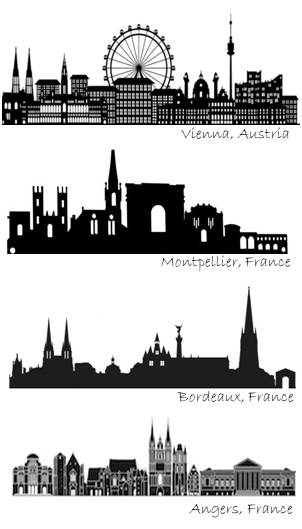

Thibault Leroy
Curriculum Vitae
2012: PhD, University of Angers, France - PhD Thesis (in French)
2009: Master in Plant genetics & pathology (with honors), University of Angers and Agro-Campus Rennes, France
Master Thesis (in French)
2007: Licence in Biology (equivalent to a B.Sc) with distinction (giving access to French merit scholarship), University of Angers, France

2019 - present :
University assistant / Senior Postdoc - Plant Evolutionary Genomics & Systematics - Department of Botany and Biodiversity research - University of Vienna, Austria
2018 - 2019:
14-month postdoctoral position funded by ANR (PI - B. Nabholz), ISEM, University of Montpellier, France
2014 - 2018:
4-year postdoctoral position funded by ANR (PI C. Plomion) & ERC (PI A. Kremer), INRA Bordeaux-Pierroton, France
2009- 2013:
3-year PhD position followed by an 8-month postdoctoral position, INRA/University of Angers, France
- Speciation / Hybrid zones
- Local adaptation to changing environments
- Gene flow, (adaptive) introgression
- Plant mutation rates and spectra
- Evolution of genomic variation within and between species
- Deleterious mutations /conservation Biology
- Methods in population genomics (demographic inferences, genome scans/GWAS, …)
- Since 2015: Individual training courses in bioinformatics (regular basis)
- Since 2019: courses in statistics and evolutionary biology (undergraduate level)
- Since 2020: courses in population genomics (Master & PhD students)

- I support the SAFE EVOLUTION program promoting a safe, inclusive, and professional environment in evolutionary biology.
- I also support all non-for-profit scientific invitiatives and societies allowing a free publication and an online access (open all around the world) to research articles and book, including the recent Peer Community In... initiative. More broadly, I am in favor of the sharing of all unpublished manuscripts (e.g. BioRxiv), data and code, as well as a more transparent peer-review process, including the publication of all the correspondence with the authors.
- I am fully against all individual awards and prizes, and more broadly, narcissism and megalomania in research. Good science is always collective.
- Reviewer for: Annals of Botany, BMC Plant Biology, Ecology and Evolution, Evolutionary Applications, Frontiers in Plant Science, Molecular Ecology, New Phytologist, Peer J, Plos Genetics, Tree Genetics & Genomes
- Referee of 2 research grant applications
- Successfully supervised (or co-supervised) 7 graduate students (master degree) + one in progress (Francesca Beclin, Univ. Vienna)
- Co-supervisor of a PhD student (Huiying Shang, University of Vienna, Austria, since 2020 - with Ovidiu Paun, after the sudden loss of Prof. Christian Lexer)
- Member of a thesis monitoring committee (Maëva Gabrielli, University of Toulouse, France,since 2019 - PhD thesis successfully defended on July 3, 2020)
- Member of the European Society for Evolutionary Biology (ESEB)
22 - Thibault Leroy, Marjolaine Rousselle, Marie-Ka Tilak, Aude Caizergues, Céline Scornavacca, Maria Recuerda Carrasco, Jérôme Fuchs, Juan Carlos Illera, Dawie H. De Swardt, Christophe Thébaud, Borja Milà & Benoit Nabholz. Endemic island songbirds as windows into evolution in small effective population sizes, in press for Current Biology (available on BioRxiv, 2020.04.07.030155).
21 - Thibault Leroy & Quentin Rougemont. Book chapter: Introduction to population genomics methods. In: Molecular Plant Taxonomy Publisher website - Ask for a private copy
20 - Quentin Rougemont, Jean-Sébastien Moore, Thibault Leroy, Eric Normandeau, Eric B. Rondeau, Ruth E. Withler, Donald M. Van Doornik, Penelope A. Crane, Kerry A. Naish, John Carlos Garza, Terry D. Beacham, Ben F. Koop & Louis Bernatchez. Demographic history shaped geographical patterns of deleterious mutation load in a broadly distributed Pacific Salmon. Plos Genetics. Available on bioRxiv (732750).
19 - Maëva Gabrielli, Benoit Nabholz, Thibault Leroy, Borja Milá, Christophe Thébaud. Within-island diversification in a passerine bird. Proceedings of the Royal Society B. 2020
18 - Thibault Leroy, Jean-Marc Louvet, Céline Lalanne, Grégoire Le Provost, Karine Labadie, Jean-Marc Aury, Sylvain Delzon, Christophe Plomion & Antoine Kremer. Adaptive introgression as a driver of local adaptation to climate in European white oaks. New Phytologist 2020; 226: 1171-1182 (special issue: oak genomics).
17 - Thibault Leroy, Quentin Rougemont, Jean-Luc Dupouey, Catherine Bodénès, Céline Lalanne, Caroline Belser, Karine Labadie, Grégoire Le Provost, Jean-Marc Aury, Antoine Kremer, Christophe Plomion: Massive postglacial gene flow between European white oaks uncovered genes underlying species barriers. New Phytologist 2020, 226: 1183-1197 (special issue: oak genomics).
16 - Thibault Leroy, Antoine Kremer & Christophe Plomion. Oak symbolism in the light of genomics. New Phytologist, 2020; 226:1012–1017 (special issue: oak genomics).
15 - Thibault Leroy, Yoann Anselmetti, Marie-Ka Tilak, Sèverine Bérard, Laura Csukonyi, Maëva Gabrielli, Céline Scornavacca, Borja Milá, Christophe Thébaud, Benoit Nabholz. A bird's white-eye view on avian sex chromosome evolution. BioRxiv 05/2019. 505610, ver. 4, peer-reviewed by PCI Evolutionary Biology (2019) (“accepted”, recommended by Kateryna Makova 2019 Young sex chromosomes discovered in white-eye birds. Peer Community in Evolutionary Biology, 100073. 10.24072/pci.evolbiol.100073)
14 - Caroline Pont*, Thibault Leroy*, Michael Seidel*, Alessandro Tondelli*, Wandrille Duchemin*; David Armisen*; Daniel Lang*, Daniela Bustos-Korts*, Nadia Goué, Francçois Balfournier, Marta-Molnar-Lang, Jacob Lage [+20 co-authors including the WHEALBI consortium]: Tracing the ancestry of modern bread wheats. Nature Genetics 05/2019; 51 (5): 905
13 - Gerald. A. Tuskan; Andrew T. Groover, Jeremy Schmutz, Stephen Paul DiFazio, Alexender Myburg, Dario Grattapaglia, Lawrence B. Smart, Tongming Yin, Jean-Marc Aury, Antoine Kremer, Thibault Leroy, [+9 co-authors] Hardwood Tree Genomics: Unlocking Woody Plant Biology. Frontiers in Plant Science. 12/2018, 9(1799)
12 - Monika Michalecka, Sylwester Masny, Thibault Leroy, Joanna Puławska: Population structure of Venturia inaequalis, a causal agent of apple scab, in response to heterogeneous apple tree cultivation. BMC Evolutionary Biology 12/2018; 18(1):5
11 - Christophe Plomion*, Jean-Marc Aury*, Joelle Amselem*, Thibault Leroy‡, Florent Murat‡, Sébastien Duplessis, Sébastien Faye, Nicolas Francillonne, Karine Labadie, Grégoire Le Provost [+56 other co-authors]: Oak genome reveals facets of long lifespan. 05/2018 Nature Plants, 4(7)
10 - Stefanie Wagner, Frédéric Lagane, Andaine Seguin-Orlando, Mikkel Schubert, Thibault Leroy, Erwan Guichoux, Emilie Chancerel, Inger Bech-Hebelstrup, Vincent Bernard, Cyrille Billard [+25 other coauthors]: High-Throughput DNA sequencing of ancient wood. Molecular Ecology 02/2018; 27(5)
9 - Nastasia R. Merceron, Thibault Leroy, Emilie Chancerel, Jeanne Romero-Severson, Daniel S. Borkowski, Alexis Ducousso, Arnaud Monty, Annabel J. Porté, Antoine Kremer: Back to America: Tracking the origin of European introduced populations of Quercus rubra L.. Genome 07/2017; 60(9)
8 - Thibault Leroy, Camille Roux, Laure Villate, Catherine Bodénès, Jonathan Romiguier, Jorge A P Paiva, Carole Dossat, Jean-Marc Aury, Christophe Plomion, Antoine Kremer: Extensive recent secondary contacts between four European white oak species. New Phytologist 01/2017; 214(2)
7 - Thibault Leroy, Valérie Caffier, Jean-Marc Celton, Nicolas Anger, Charles-Eric Durel, Christophe Lemaire, Bruno Le Cam: When virulence originates from nonagricultural hosts: Evolutionary and epidemiological consequences of introgressions following secondary contacts in Venturia inaequalis. New Phytologist 02/2016
6 - Christophe Lemaire, Marie De Gracia, Thibault Leroy, Monika Michalecka, Hanne Lindhard-Pedersen, Fabien Guerin, Pierre Gladieux, Bruno Le Cam: Emergence of new virulent populations of apple scab from nonagricultural disease reservoirs. New Phytologist 09/2015; 209(3)
5 - Christophe Plomion, Jean-Marc Aury, Joëlle Amselem, Tina Alaeitabar, Valérie Barbe, Caroline Belser, Hélène Bergès, Catherine Bodénès, Nathalie Boudet, Christophe Boury, [30 other authors including Thibault Leroy]: Decoding the oak genome: Public release of sequence data, assembly, annotation and publication strategies. Molecular Ecology Resources 05/2015; 16(1)
4 - Thibault Leroy, Bruno Le Cam, Christophe Lemaire: When virulence originates from non-agricultural hosts: New insights into plant breeding. Infection, genetics and evolution: journal of molecular epidemiology and evolutionary genetics in infectious diseases 01/2014; 27., DOI:10.1016/j.meegid.2013.12.022
3 - Thibault Leroy, Christophe Lemaire, Frank Dunemann, Bruno Le Cam: The genetic structure of a Venturia inaequalis population in a heterogeneous host population composed of different Malus species. BMC Evolutionary Biology 03/2013; 13(1):64
2- Aymeric Joubert, Nelly Bataille-Simoneau, Claire Campion, Thomas Guillemette, piétrick Hudhomme, Béatrice Iacomi-Vasilescu, Thibault Leroy, Stéphanie Pochon, Pascal Poupard, Philippe Simoneau: Cell wall integrity and high osmolarity glycerol pathways are required for adaptation of Alternaria brassicicola to cell wall stress caused by brassicaceous indolic phytoalexins. Cellular Microbiology 01/2011; 13(1):62-80
1- Pierre Gladieux, Xiu-Guo Zhang, Isabel Róldan-Ruiz, Valérie Caffier, Thibault Leroy, Martine Devaux, Sabine Van Glabeke, Els Coart, Bruno Le Cam: Evolution of the population structure of Venturia inaequalis, the apple scab fungus, associated with the domestication of its host. Molecular Ecology 02/2010; 19(4):658-74
I am a population geneticist, currently employed as a full-time university assistant at the department of Botany & Biodiversity research, University of Vienna, Austria. My research is focused on the study of evolutionary forces: gene flow, drift, mutation and selection and their relative importance in divergence and speciation. I have particularly studied fungal, plant and animal models for that purpose. My interests also include genomics - in its broader sense - and statistical methods for population genetics.
Contact:
Thibault (Tibo) Leroy -
Email
Department of Botany and Biodiversity Research
University of Vienna, Faculty of Life Sciences
Rennweg 14, A-1030 Vienna, Austria
Webpage Univ. Vienna